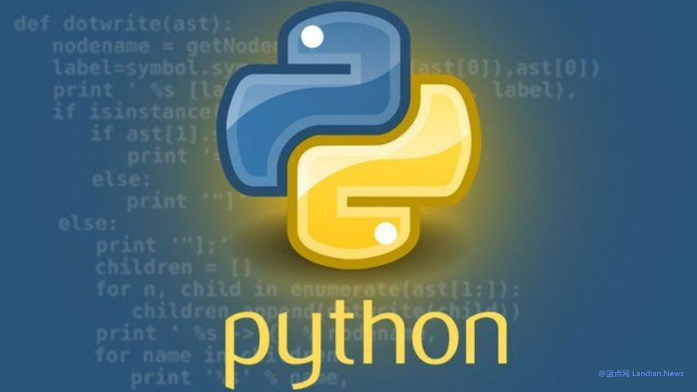

北雁冬翼（simone luxem）🏳️⚧️🏳️🌈🔬
@Simone_Luxem
这就去学python

蓝点网
@landiantech
#Python 软件基金会拒绝美国政府 150 万美元拨款，因为接受赞助需要放弃 DEI (多元、平等和包容)，这与基金会的价值观不符。在拜登时期大量美国公司开展 DEI 工作，不过特朗普上任时就立即取消美国政府的 DEI 政策，其他科技公司也在陆续取消 DEI 政策，不过 PSF 不愿意放弃 DEI 所以决定拒绝拨款。 https://t.co/Yk8dtcl20D